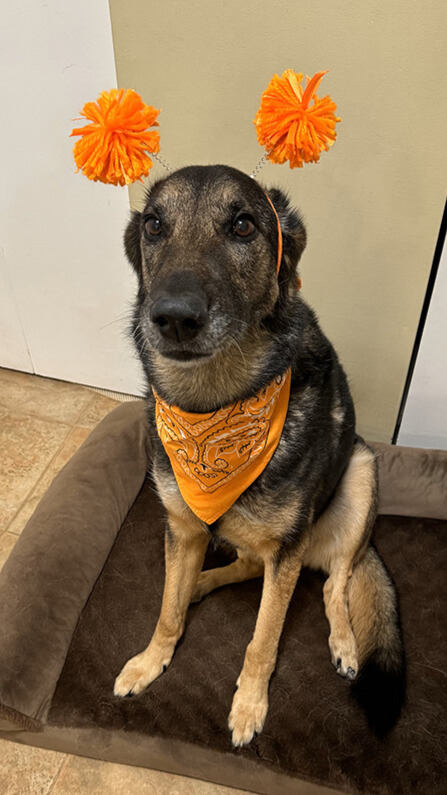
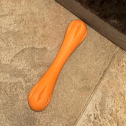

Kiki Cralle
Female German Shepherd | Professional Stick Athlete & Beloved Companion

Contact/Personal Information
Gender: Female
Birthday: February 3, 2016
Lifespan: 9 years (Passed on August 14, 2025)
Origin: Breeder in South Carolina; brought home by her loving family
Specialty: Stick enthusiast, laser chaser, people-watching professional, and trick master
Objective
To spread joy, laughter, and unconditional love while proudly serving as the household’s best friend, guard, entertainer, and recruiter of new stick-throwers.
Core Skills & Talents
- Stick Mastery: Devoted to both her orange and blue rubber sticks. Could run across entire fields with lightning speed, often rolling dramatically in her pursuit.
- Paw-Shove Precision: Expert at dribbling her stick, nudging and shoving it with her paw so it rolled far away — always landing exactly where she wanted it, like she set up her own next play.
- Laser Acrobatics: Chased red dots with cat-like pounces, spins, and somersault-level energy (despite occasional self-inflicted collisions).
- Balloon Booping: Expert at leaping and nose-tapping balloons mid-air.
- Window Watcher: Skilled people-watcher from her day-bed throne, keeping the street in check.
- Front-Door Alarm Specialist: Barked at anyone approaching the front door — mailman, family, Chanti — always ready to announce arrivals and defend her territory.
- Guest Relations Specialist: Though not a cuddler with family, she became affectionate when visitors arrived — plopping on the bed, hanging out, even napping beside them — mostly because she recognized them as fresh recruits for stick duty. Sometimes her excitement was so intense she would happy-pee, proving just how overjoyed she was to meet new throwers.
- Sirens & Family Chorus: The only time she ever howled was when ambulance sirens sounded or when her human family joined in — always chiming in to add her voice to the collective howl.
- Education - Training/Learned skills: Highly intelligent and obedient. Could perform:
- Shake / Other Hand
- Sit, Down, Roll Over, Speak, Stay (balancing treats on her head/muzzle for extended periods)
- Okay (release command)
- Up (stands and puts front paws on you)
- Touch (boops hand or nearby object)
- Back (continues backing up indefinitely on command)
- Selective Socializing: Barking enthusiast when encountering small white dogs, but loyal companion to her beloved boyfriend Oreo (neighbor’s scruffy pup).
- Independent Spirit: Usually showed affection only when it advanced her stick agenda, but always on her own terms.
- Low Maintenance & Beach Enthusiast: Hated baths, but loved running along the beach — especially if a stick was involved. Shed enough to avoid frequent grooming.
Favorite Things
- Snacks: Bananas, apples, peanut butter, and ice cubes.
- Playthings: Orange stick, blue stick, balloons, laser dot, and any throwable stick at the beach.
- Friends: Oreo (true love), Romeo (friendly acquaintance), and her human family.
Experience
- Brought endless laughter with her dramatic rolls and zoomies.
- Invented her own games by paw-shoving her stick across the yard like a pro.
- Outsmarted her family by saving rare displays of affection for guests, ensuring new throwers were always lined up.
- Protected her home with unmatched vigilance — every approach to the front door was met with a full-throttle bark.
- Contributed to family sing-alongs during siren emergencies, showing off her impeccable howl timing.
- Lived bravely with a condition that slowly weakened her back legs, adapting first with determination and later with her wheelchair for walks.
- Left this world after a final battle with her adventurous sock-eating ways — a choice made with love to let her rest, at just the right time.
References & Trusted Caretakers
- Oreo (Boyfriend & Partner in Mischief)
- Romeo (Friendly companion)
- Chanti (Best friend and devoted babysitter)
- Uncle Dave (Avid dog-lover and caregiver)
- Oreo & Romeo’s Family (Trusted caretakers while away)
- Her human family (Forever grateful for her love and joy)